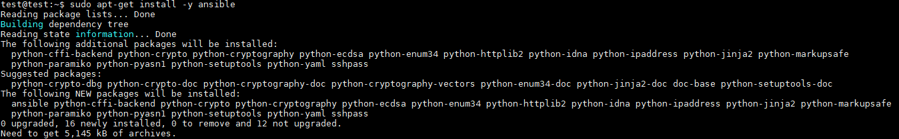

本章將介紹使用 ubuntu-ansible 連線控制 windows，但是 windows 是沒有 ssh 連線的，所以會需要用到 pywinrm
1. 安裝 ansible
1 | 將 PPA 添加到系統中，中間需要案 Enter 接受 PPA 增加 |


1 | 更新並安裝 |

2. 安裝 pywinrm
1 | 安裝 pywinrm 模組 |

3. 配置 ansible
Ansible 通過 hosts 文件知道所有服務器，我們需要先設置此文件，然後才能開始與我們的其他機器連線
1 | host 文件路徑 |
4. 新增群組資料夾，windows 連線會需要輸入遠端帳密，因此我們在 ansible 下建立 group_vars 輸入遠端需要設定
PS.檔案名稱要跟群組一樣，才會讀取到 YMAL 檔的內容
1 | sudo mkdir /etc/ansible/group_vars |


5. 製作 powershell 腳本，本文章是使用 windows server 2016 Datacenter
桌面右鍵 → 新增 → 文件資料夾
隨意資料夾右上箭頭 → 點選分頁檢視 → 副檔名打勾，這樣就看的到檔案副檔名

命名 ConfigureRemotingForAnsible.ps1 貼上網址內容，檔案內容：https://goo.gl/t5BWTN
貼上內容後更改檔名 .ps1
6. windows 開啟 powershell 設定，本文章是使用 windows server 2016 Datacenter 不用下列步驟可以跳第 7 步驟
開啟 powershell，左下搜尋 → 輸入 powershell → 右鍵以系統管理員身分執行

1 | 安裝 .NET Framework 4.5 |
1 | 更改 powershell 策略為 remotesigned 輸入 y 確認 |
1 | 查看版本（ 須為3.0以上 ） |

1 | 開啟 Winrm service |

7. 對 winrm service 進行基礎配置
1 | winrm quickconfig |

1 | winrm service 配置 auth |

1 | winrm service 配置加密方式為允許非加密 |

1 | 在放置 ConfigureRemotingForAnsible.ps1 路徑下執行配置 winrm 與 https 證書訊息 |
1 | 檢查 config 內容 |

8. 測試，如下圖就成功了接下來可以下其他指令對機器做控制
1 | ansible all -m win_ping |

9. 下指令方式操作機器
1 | ansible name -m win_command -a "command" |